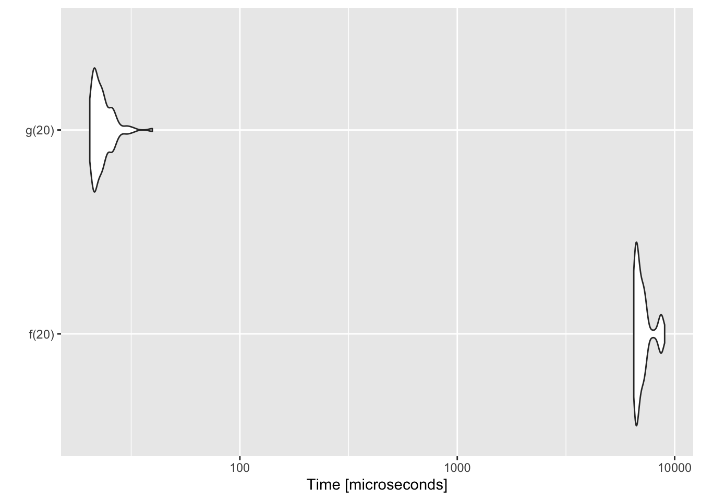

4 Notes of C++ and R
The following script aims to review the function of Rcpp. As a sociologist, I always struggle to understand some underlying processes, and I am curious about digging a bit more into this issue!
WARNING! All my notes are for macOS users.
Pending,
- Deconstruct some
C++codes for clarity - Re-write some notes and expand them
- Add some
Rcppcodes for Social Network Analysis (maybe new script) - Create a new script for
RcppArmadillo
4.1 C++ and Rcpp
C++ is a compiled and statistically typed language.
According to Wikipedia?
C++ is a general-purpose programming language created by Bjarne Stroustrup as an extension of the C programming language, or “C with Classes”.
Why Rcpp?
Sometimes R code just isn’t fast enough. You’ve used profiling to figure out where your bottlenecks are, and you’ve done everything you can in R, but your code still isn’t fast enough […] learn how to improve performance by rewriting key functions in C++. This magic comes by way of the Rcpp package (Eddelbuettel and François 2011) (with key contributions by Doug Bates, John Chambers, and JJ Allaire).
From here I would assume that you have some previous background in the C++ programming1.
4.3 Setup
Before using Rcpp I would need to install Xcode in the app store. For Windows, Rtool have to be installed, and in Linux use a code such as sudo apt-get install r-base-dev.
4.4 Rcpp Introduction
We would now create a C++ function- However, the most important element in the following code to connect R with C++ is this code // [[Rcpp::export]], which allow exporting the cumSum function that is created in the following chunk into R.
#include <Rcpp.h>
using namespace Rcpp;
// [[Rcpp::export]]
NumericVector cumSum(NumericVector x) {
int n = x.size();
NumericVector out(n);
out[0] = x[0];
for (int i = 1; i < n; ++i) {
/*
++i: incrementing (adding 1 to a variable)
--i: decrementing (subtracting 1 from a variable)
i++: increment after the variable's value is used in the remainder of the expression
i--: decrement occurs after the variable's value is used in the remainder of the expression
*/
out[i] = out[i-1] + x[i];
}
return out;
}Same code in R:
CumSum <- function(x) {
output <- numeric(length(x))
output[1] <- x[1]
for (i in 2:length(x)) {
output[i] <- output[i-1] + x[i]
}
return(output)
}This is the process that we are calculating with the function in the first iteration \((0-1)+2\), then \((1-1)+3\), and \((3-1)+4....\). Recall that C++ start from \(0\) rather than \(1\) (in C++, vectors indices start at 0). Now, we have three similar functions. One from base R, the other is a C++ function (called: cumSum), and the loop CumSum created in R. They should give the same results:
x <- 1:10
cumsum(x)
cumSum(x)
CumSum(x)
#> [1] 1 3 6 10 15 21 28 36 45 55
#> [1] 1 3 6 10 15 21 28 36 45 55
#> [1] 1 3 6 10 15 21 28 36 45 55Now, we can compare the performance of each function using microbenchmark. Rcpp should be faster than the R functions:
library(magrittr)
library(microbenchmark)
x <- 1:1000
microbenchmark(
native = cumsum(x),
loop = CumSum(x),
Rcpp = cumSum(x)
) %>% summary(unit = "ms") %>% knitr::kable(format = "markdown")| expr | min | lq | mean | median | uq | max | neval | cld |
|---|---|---|---|---|---|---|---|---|
| native | 0.005017 | 0.0053145 | 0.0058378 | 0.0055340 | 0.0063890 | 0.009001 | 100 | a |
| loop | 0.089442 | 0.0916370 | 0.0952121 | 0.0949095 | 0.0974105 | 0.115373 | 100 | b |
| Rcpp | 0.004407 | 0.0051995 | 0.0212336 | 0.0063640 | 0.0103825 | 1.323327 | 100 | a |
The speed and ability to cheaply use resources are two of the main features of C++. Due that is a compiler and not an interpreter is one of the reasons why is faster than R.
Using Rcpp we can use C++ codes directley into R (evalCpp)
library(Rcpp)
# evaluate simple expression as C++
Rcpp::evalCpp("3 + 2")
#> [1] 5
set.seed(42)
Rcpp::evalCpp("Rcpp::rnorm(2)")
#> [1] 1.3709584 -0.5646982
# maximum numeric limits of my computer in terms of double
Rcpp::evalCpp("std::numeric_limits<double>::max()")
#> [1] 1.797693e+308Also, we can add functions from C++ (cppFunction) into the R environment.
library(Rcpp)
## Example 1
# create a C++ function to be used in R
cppFunction('int add(int x, int y, int z) {
int sum = x + y + z;
return sum;
}')
# R function with same name as C++ function
add
#> function (x, y, z)
#> .Call(<pointer: 0x10eac18f0>, x, y, z)
add(1, 2, 3)
#> [1] 6
## Example 2
# create a C++ function to be used in R
cppFunction("
int exampleCpp11(){
auto x = 10; // guesses type
return x;
}", plugins=c("cpp11")) ## C++11 is a version of the standard for the programming language C++
# R function with same name as C++ function
exampleCpp11()
#> [1] 10
## Other examples
cppFunction("
int doubleMe(int a){return a+a;}
")
doubleMe
#> function (a)
#> .Call(<pointer: 0x112b89910>, a)
a <- 3
doubleMe(a)
#> [1] 6
cppFunction("
int f(int a, int b){
return(a+b);
}
")
f(21, 21)
#> [1] 42
f(21.0, 21)
#> [1] 42
f(21.5, 21.5) # !
#> [1] 42
#f(21.5, "hello, world") # error!There are some issues with integer and double
Some names that are used in R:
- integer numbers:
int - Floating point number:
double
## R
# literal numbers are double
x <- 42
storage.mode(x)
#> [1] "double"
# integers needs the L suffix
y <- 42L
storage.mode(y)
#> [1] "integer"
z <- as.integer(42)
storage.mode(z)
#> [1] "integer"
## C++
library(Rcpp)
# Literal integers are `int`
x <- evalCpp("42")
storage.mode(x)
#> [1] "integer"
# Suffix with .0 forces a double
y <- evalCpp("42.0")
storage.mode(y)
#> [1] "double"
# explicit casting with (double)
y <- evalCpp("double(40+2)")
storage.mode(y)
#> [1] "double"
# Beware of the integer division!
# integer division
evalCpp("13/4")
#> [1] 3
# explicit cast, and hence use of double division
evalCpp("(double)13/4")
#> [1] 3.25The last function of the package Rcpp is sourceCpp() that is the source code in which other functions are built (e.g. evalCpp and cppFunction). This function builds on and extends cxxfunction(). On the features is that can compile a number of functions and create a file from all of them. Also, have some plugins and dependency options (e.g. RcppArmadillo, RcppEigen, RcppSGL). These plugins can also turn on support for C++11, OpenMp, and more.
We can also write some C++ codes directly in RMarkdown adding to the chunk the following line of codes
Now we will create an example, and create a function called timesTwo and run the C++ code as an R function from C++. The most important element is the code // [[Rcpp::export]] which export the following function into R. Also, we would ask for Rcpp to source the function for us. Behind the scenes Rcpp creates a wrapper, and then Rcpp compiles, links, and loads the wrapper. Notice that std is tacking the standard package of C++ to conduct a second function.
#include <Rcpp.h>
using namespace Rcpp;
// This is a simple example of exporting a C++ function to R. You can
// source this function into an R session using the Rcpp::sourceCpp
// function (or via the Source button on the editor toolbar). ...
// [[Rcpp::export]]
NumericVector timesTwo(NumericVector x){
return x * 2;
}
// You can include R code blocks in C++ files processed with source Cpp
// (useful for testing and development). The R code will be automatically
// fun after the compilation.
/*** R
timesTwo(42)
cat("hello!\n")
timesTwo(c(12,48,28))
*/
// [[Rcpp::export]]
double cubed(double x){
return std::pow(x, 3);
}
// [[Rcpp::export]]
NumericVector cubedVec(NumericVector x){
return pow(x, 3);
}Actually, if we check once again, we would have available the function into our R environment.
timesTwo(42)
#> [1] 84
cubed(2)
#> [1] 8
cubedVec(3)
#> [1] 27Now we would check the speed of a function from R and another from C++. We would try the Fibonacci sequence
# An R function
f <- function(n){
if(n < 2) return(n)
return(f(n-1) + f(n-2))
}
sapply(0:10, f)
#> [1] 0 1 1 2 3 5 8 13 21 34 55
# A C++ function
Rcpp::cppFunction('int g(int n){
if (n < 2) return(n);
return(g(n-1) + g(n-2));
}
')
sapply(0:10, g)
#> [1] 0 1 1 2 3 5 8 13 21 34 55
# Check time! increase exponentially
library(rbenchmark)
benchmark(f(10), f(15), f(20))[,1:4]
#> test replications elapsed relative
#> 1 f(10) 100 0.007 1.000
#> 2 f(15) 100 0.074 10.571
#> 3 f(20) 100 0.738 105.429
# Now we would compare both functions, C++ perform incredible faster!
benchmark(f(20), g(20))[,1:4]
#> test replications elapsed relative
#> 1 f(20) 100 0.718 179.5
#> 2 g(20) 100 0.004 1.0
res <- microbenchmark::microbenchmark(f(20), g(20))
res
#> Unit: microseconds
#> expr min lq mean median uq max neval cld
#> f(20) 6483.526 6626.454 7084.06236 6819.7120 7263.3165 8991.043 100 b
#> g(20) 20.397 21.238 23.36513 22.7275 24.2655 39.573 100 a
suppressMessages(microbenchmark:::autoplot.microbenchmark(res))
4.5 D. Eddelbuettel tutorial
Some resources:
- rcpp
- Rcpp Gallery
- Blog
- LearnCpp
- cplusplus
- Seamless R and C++ Integration with Rcpp
- D. Eddelbuettel tutorial
- RStudio
In comparison with R, C++ is a compiler and not interpreted. Therefore, we may need to supply
- header location via
-I - library location via
-L - library via
--llibraryname
Then, we would need to provide these items and compile them all together as,
g++ -I/usr/include -c qnorm_rmath.cpp
g++ -o qnorm_rmath qnorm_rmath.o -L/usr/lib -lRmath
Some notes of the differences between R and C++:
Ris dynamically typed:x <- 3.14; x <- "foo"is valid.- In
C++, each variable must be declared before first use. - Common types are
intandlong(possible withunsigned),floatanddouble,bool, as well aschar. - No standard string type, though
std::stringis close. - All these variables types are scalars which is fundamentally different from
Rwhere everything is a vector classand (struct) allow the creation of composite types; classes add behaviour to data to formobjects- Variables need to be declared, cannot change
- Control structures similar to
R:for,while,if,switch - Functions are similar too but note the difference in position-only matching, also same function name but different arguments allowed in
C++ - Pointers and memory management: very different but lots of issues people had with
Ccan be avoided viaSTL(which is somethingRcpppromotes too) - Sometimes still useful to know that a pointer is…
Comparison between C++: Scalar; and Rcpp Vectors
int: IntegerVectordouble: NumericVectorchar[];std::string: CharacterVectorbool: LogicalVectorcomplex: ComplexVector
#include <Rcpp.h>
// [[Rcpp::export]]
double getMax(Rcpp::NumericVector v){
int n = v.size(); // vectors are describing
double m = v[0]; // initialize
for (int i=0; i<n; i++){
if (v[i] > m){
Rcpp::Rcout << "Now" << m << std::endl;
m = v[i];
}
}
return(m);
}getMax(c(20, 201, 18))
#> Now20
#> [1] 201#include <Rcpp.h>
//[[Rcpp::export]]
Rcpp::NumericVector colSums(Rcpp::NumericMatrix mat){
size_t cols = mat.cols(); // How big is the matrix?
Rcpp::NumericVector res(cols); // knowing the size, we could create a vector
for (size_t i=0; i<cols; i++){ // Then operation from 0 from less of the columns
res[i] = sum(mat.column(i));
}
return(res);
}What we did?
NumericMatrixandNumericVectorgo-to types for matrix and vector operationso n floating point variables- We prefix with
Rcpp::to make the namespace explicit - Accessor functions
.rows()and.cols()for dimensions - Result vector allocated based on number of columns column
- Function
column(i)extracts a column, gets a vector, andsum()operates on it - The last
sum()was internally vectorised, no need to loop over all elements
Another example
#include <Rcpp.h>
//[[Rcpp::export]]
double getMax(Rcpp::NumericVector v){
int n = v.size(); // vectors are describing
double m = v[0];
for (int i=0; i<n; i++){
if (v[i] > m) {
Rcpp::Rcout << "Now" << m << std::endl;
m = v[i];
}
}
return(m);
}getMax(c(1,4,3,46))
#> Now1
#> Now4
#> [1] 46struct Date {
unsigned int year;
unsigned int month;
unsigned int day
};
struct Person {
char firstname[20];
char lastname[20];
struct Date birthday;
unsigned long id;
};
class Date {
private:
unsigned int year;
unsigned int month;
unsigned int date;
public:
void setDate(int y, int m, int d);
int getDay();
int getMonth();
int getYear();
}C++ has vectors as well: written as std::vector<T> where T denotes template meaning different types can be used to instantiate
Rcpp::cppFunction("double getmax2(std::vector<double> v){
int n = v.size(); // vectors are describing
double m = v[0]; // initialize
for(int i=0; i<n; i++){
if (v[i] > m){
m = v[i];
}
}
}")
getMax(c(4,5,2))
#> Now4
#> [1] 5- STL vectors are widely used so
Rcppsupports them - Very useful to access other
C++code and libraries - One caveat:
Rcppvectors reuse R memory so no copies - STL vectors have different underpinning so copies
- But not a concern unless you have a) either HUGE data structures, b) or many many calls
Rcpp::cppFunction("void setSecond(Rcpp::NumericVector v){
v[1] = 42; // numeric vector (temporal copy! could not survey)
}")
v <- c(1,2,3); setSecond(v); v # as expected
#> [1] 1 42 3
v <- c(1L, 2L, 3L); setSecond(v); v # different (vector of integers)
#> [1] 1 2 3#include <Rcpp.h>
// [[Rcpp::export]]
double getMax(Rcpp::NumericVector v){
return( max(v));
}getMax(c(2,3,4,5))
#> [1] 5For math operations, it should be used RcppArmadillo!
Packages
- The standard unit of R code organization.
- Creating packages with Rcpp is easy
- Create an empty one via
Rcpp.package.skeleton() - Rstudio has the File -> New Project -> Directory Choices -> Package Choices
- Create an empty one via
- The vignette
Rcpp-packageshas fuller details